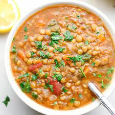

Lentil Soup

A Very Easy To Make Comfort Food
Lentil soup is a soup with lentils as its main ingredient; it may be vegetarian or
include meat, and may use brown, red, yellow, green or black lentils, with or without
the husk. Dehulled yellow and red lentils disintegrate in cooking, making a
thick soup.
Ingredients
- 1/4 Cup Olive Oil
- 1 Onion, chopped
- 2 Carrots, diced
- 2 Stalks Celery, chopped
- 2 Cloves Garlic, minced
- 1 Bay Leaf
- 1 Teaspoon Dried Basil
- 1 Teaspoon Dried Oregano
- 2 Cups Dried Lentils
- 8 Cups Water
- 1 (14.5 ounce) Can Crushed Tomatoes
- 1/2 Cup Spinach, rinsed and thinly sliced
- 2 Tablespoons Vinegar
- Salt, to taste
- Black Pepper, to taste
Steps
- Heat oil in a large soup pot over medium heat. Add onions, carrots, and celery;
cook and stir until onion is tender, 3 to 5 minutes.
- Stir in garlic, bay leaf, oregano, and basil; cook for 2 minutes.
- Stir in lentils, and add water and tomatoes. Bring to a boil. Reduce heat and let
simmer until lentils are tender, at least 1 hour.
- When ready to serve, stir in spinach and cook until it wilts.
- Stir in vinegar and season with salt and pepper; taste and adjust as needed.
- Serve hot and enjoy!